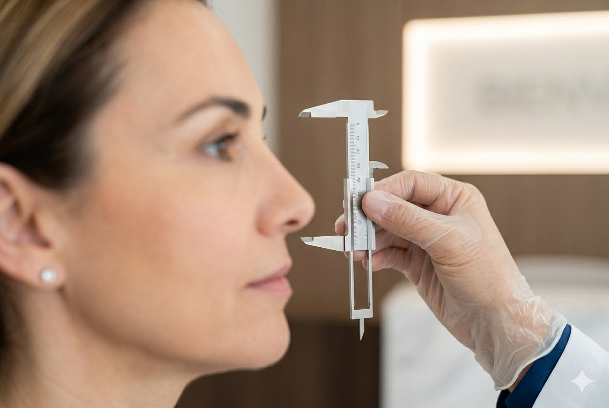
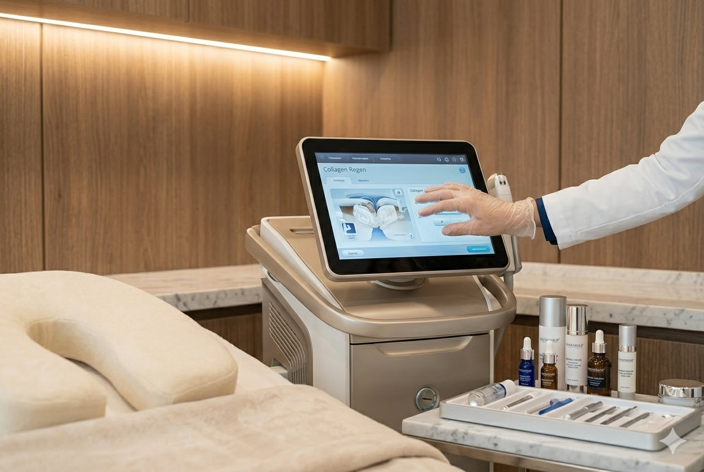

Áreas de atención
Servicios principales orientados a la valoración y seguimiento de pacientes adultos.

Valoración médica integral
Consulta enfocada en comprender síntomas, antecedentes y contexto clínico para orientar un plan de acción claro.

Seguimiento de enfermedades crónicas
Acompañamiento en control y seguimiento de hipertensión, diabetes, dislipidemia y otras condiciones frecuentes.

Interpretación de exámenes y segunda opinión
Orientación profesional para entender resultados, aclarar dudas y tomar decisiones con mayor tranquilidad.